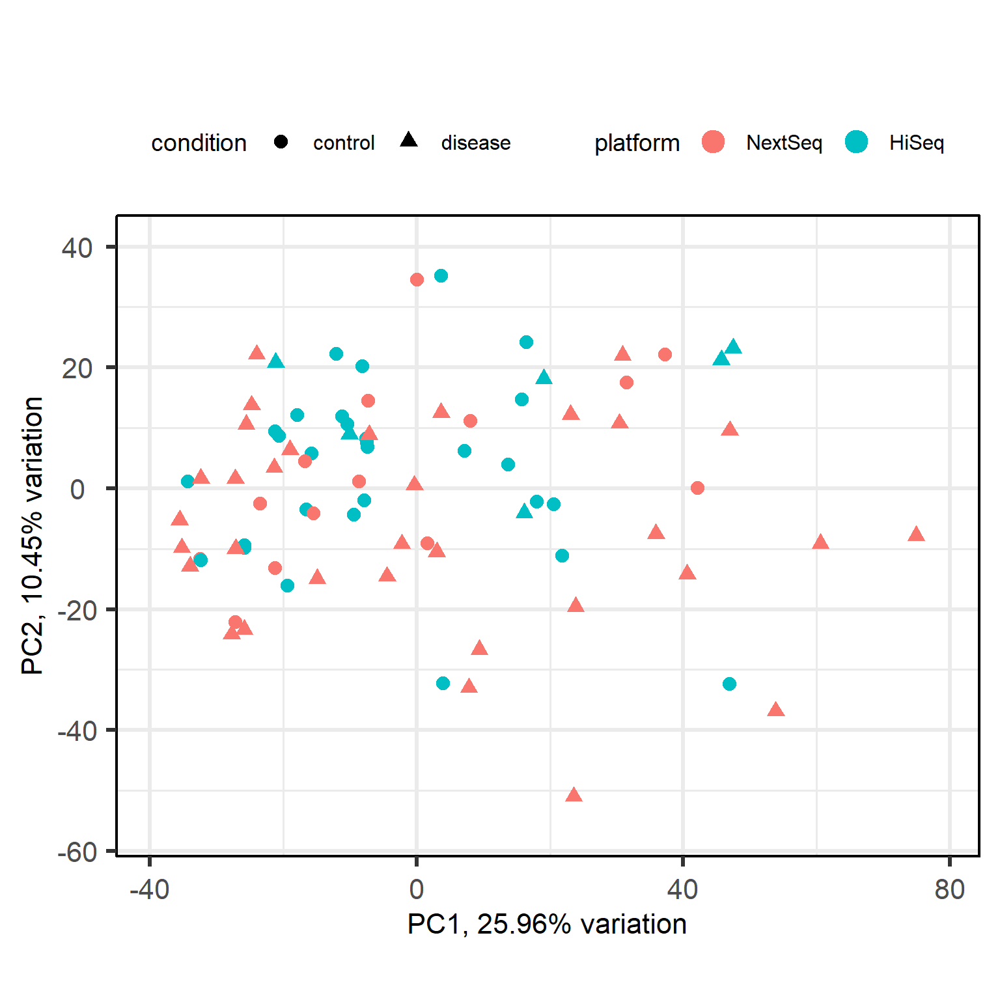
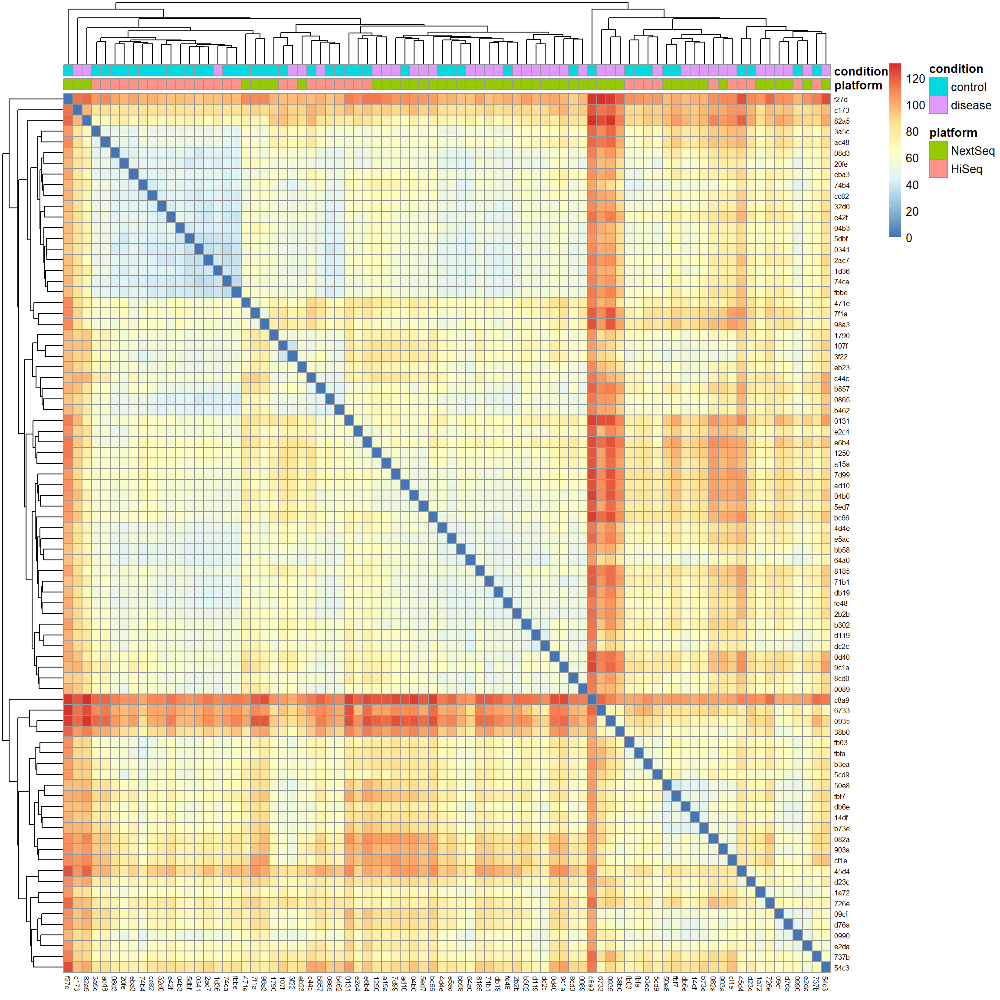

RNA-Seq Analysis Part 2: Loading Data and Quality Control
RNA-seq
analysis
tutorial
Author
Robin Schäper
Published
March 18, 2026
Introduction
In this second part of our RNA-seq analysis series we will dive deeper into quality control, how to check basic assumptions about our data, detect potential outliers using principal component analysis and hierarchical clustering of Euclidean distances. We will also discuss how to correct for batch effects, which are technical variations that can arise from differences in sample processing, sequencing runs, or other factors that are not related to the biological conditions being studied. For this example we will use a count matrix from a diabetes study (bulk-RNAseq, whole blood). Depending on the available metadata, we can compare different tissues, individuals or treatment groups to each other, and the same methods can be applied to other types of omics data (e.g. proteomics, metabolomics, etc.).
Loading the count matrix and metadata
First we download the count matrix and load it into R, and then we load the metadata using the GEOquery package. The count matrix is a tab-delimited file with gene names as row names and sample names as column names, while the metadata contains information about the samples, such as treatment group.
#load necessary librarieslibrary(here) # for file paths# Downloading the count matrixurl <-"https://www.ncbi.nlm.nih.gov/geo/download/?acc=GSE123658&format=file&file=GSE123658%5Fread%5Fcounts%2Egene%5Flevel%2Etxt%2Egz"dest <-here("data", "rnaseq", "GSE123658_counts.tsv.gz")download.file(url, destfile = dest)# Loading the count matrixcounts <-read.delim(dest, row.names =1)dim(counts)
Let’s remove the “X” prefix from the column names of the count matrix, which is added by R when the column names start with a number (e.g. “1”, “2”, etc.). This will make it easier to match the column names with the sample names in the metadata.
The authors of the study have sequenced samples using two different illumina platforms, this presents a great opportunity to discuss batch effects! Let’s finish loading the data and then we will check for batch effects in the next section.
Notice that the sample id and condition are embedded in the title column of the metadata, so we will need to extract them for downstream analysis.
meta$sample_id <-sub(".*ID:", "", meta$title)meta$sample_id <-trimws(meta$sample_id)# set row names of metadata to sample_idrownames(meta) <- meta$sample_id# define factor condition based on the title columnmeta$condition <-ifelse(grepl("healthy", meta$title, ignore.case =TRUE),"control","disease")meta$condition <-factor(meta$condition, levels =c("control", "disease"))table(meta$condition)
control disease
43 39
# define factor platform based on the platform_id columnmeta$platform <-ifelse(grepl("GPL18573", meta$platform_id),"NextSeq","HiSeq")meta$platform <-factor(meta$platform, levels =c("NextSeq", "HiSeq"))table(meta$platform)
NextSeq HiSeq
47 35
Now let’s align the count matrix and metadata to ensure that the samples are in the same order.
# Aligning the count matrix and metadatameta <- meta[match(colnames(counts), rownames(meta)), ]all(colnames(counts) ==rownames(meta))
[1] TRUE
One more thing: Right now our count matrix contains gene names as row names, but for downstream analysis with DESeq2 we will need to have Ensembl gene IDs as row names. We can use the biomaRt package to convert gene names to Ensembl gene IDs.
Now we create a mapping between Ensembl gene IDs and gene symbols using the biomaRt package, which will allow us to annotate our count matrix with gene symbols for easier interpretation of the results. We will add this as row data to our DESeqDataSet object later on. The reason we keep the Ensembl gene IDs as row names is that they are more stable and less ambiguous than gene symbols, which can sometimes be duplicated or change over time.
library(biomaRt) # for gene annotation# Create a mapping between Ensembl gene IDs and gene symbolsensembl <-useMart(biomart ="ENSEMBL_MART_ENSEMBL",dataset ="hsapiens_gene_ensembl",host ="https://www.ensembl.org")genes <-rownames(counts)mapping <-getBM(attributes =c("ensembl_gene_id", "hgnc_symbol"),filters ="ensembl_gene_id",values = genes,mart = ensembl)# Create a named vector for mapping Ensembl gene IDs to gene symbolsgene_symbols <-setNames(mapping$hgnc_symbol, mapping$ensembl_gene_id)
Now we can create the so-called DESeqDataSet object, which is a container for the count matrix and metadata that is used for downstream analysis with the DESeq2 package. This object will allow us to perform various quality control checks and normalization steps before we proceed with differential expression analysis. We will use the “platform” and “condition” columns from the metadata as covariates in our design formula, which will allow us to account for potential batch effects and biological variation in our analysis.
For visualization purposes, we will perform a variance stabilizing transformation (VST) on the count data, which will help to stabilize the variance across different levels of expression and make it easier to visualize the data.
vsd <-vst(dds, blind =TRUE)mat <-assay(vsd)
PCA
Code
library(PCAtools) # for PCA visualizationp <-pca(mat, metadata = meta, removeVar =0.1)# set the row names of loadings to the gene symbols# Get symbolssymbols <-rowData(dds)$symbolnames(symbols) <-rownames(dds) # ENSG IDs as namesmatched_symbols <- symbols[rownames(p$loadings)]matched_symbols[is.na(matched_symbols)] <-rownames(p$loadings)# ensure uniquenesslabels <-make.unique(matched_symbols)rownames(p$loadings) <- labelsbiplot(p,colby ="platform",shape ="condition",lab =NULL,legendPosition ="top")

We observe that a subset of disease samples are separated from the control samples along the first principal component and no distinction between the two platforms is visible at first glance.
Let’s skim the data with a pairs plot to see if any principal component is correlated with the platform, which would indicate a batch effect.
Principal components (PC) 4 and 6 seem to be correlated with the platform, which suggests that there may be a batch effect present in the data. We are also curious what PC5 is about.
To obtain accurate results in downstream analysis we could either remove the batch effect using a method like ComBat or include the platform as a covariate in our design formula when performing differential expression analysis with DESeq2. In this case, we have already included the platform as a covariate in our design formula, which should help to account for any potential batch effects in our analysis.
NKX3-1 is a transcription factor that is known to be involved in prostate development and has been implicated in prostate cancer. It could be that this PC captures a biological extreme related to a prostate condition, or just a technical artifact. We will further investigate this with the Euclidean distance matrix and hierarchical clustering in the next section.
Hierarchical clustering of Euclidean distances
Euclidean distances are a common way to derive a measure of similarity between samples based on their gene expression profiles. The Euclidean distance between two samples is defined as:
\[d(x, y) = \sqrt{\sum_{i=1}^{n} (x_i - y_i)^2}\] where \(x\) and \(y\) are the gene expression profiles of the two samples, and \(n\) is the number of genes. The smaller the distance, the more similar the samples are in terms of their gene expression profiles.
Let’s calculate them in code and visualise the result as a heatmap.
# Calculate Euclidean distancesdist_matrix <-dist(t(mat), method ="euclidean")# Hierarchical clusteringhc <-hclust(dist_matrix, method ="complete")# Visualize the distance matrix as a heatmaplibrary(pheatmap) # for heatmap visualizationpheatmap(as.matrix(dist_matrix),clustering_distance_rows = dist_matrix,clustering_distance_cols = dist_matrix,clustering_method ="complete",annotation_col = meta[, c("platform", "condition")],show_rownames =TRUE,show_colnames =TRUE,fontsize_row =6,fontsize_col =6)

We notice two things: First, samples cluster by platform and the condition looks mixed within clusters. This further supports the idea that the batch effect is a strong source of variation in our data we definitely have to account for in downstream analysis. Second, there is a red strip of four samples which are highly distant from the rest of the samples.
Conclusion
In this part of the RNA-seq analysis series, we have loaded the count matrix and metadata, performed a principal component analysis to check for batch effects and visualized the results using a biplot and pairs plot. We also calculated Euclidean distances between samples and visualized them as a heatmap with hierarchical clustering. We observed that there is a strong batch effect present in the data, which we will need to account for in downstream analysis. Additionally, we identified a subset of samples that are highly distant from the rest of the samples, which may indicate potential outliers or technical artifacts that we will need to investigate further. In the next part of the series, we will discuss how to perform differential expression analysis while accounting for batch effects and other sources of variation in our data.